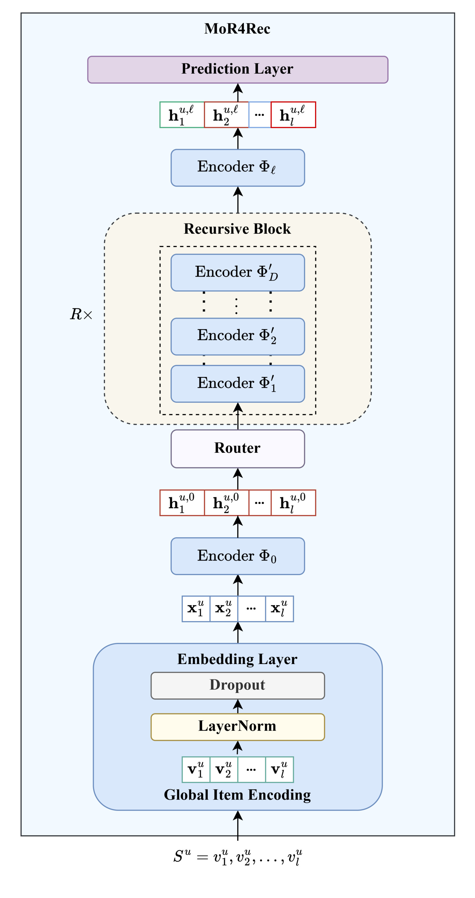
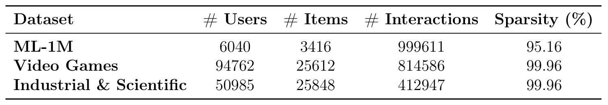
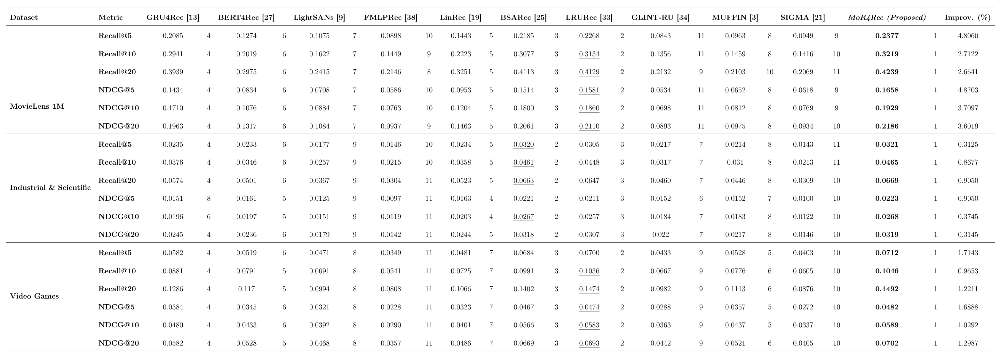
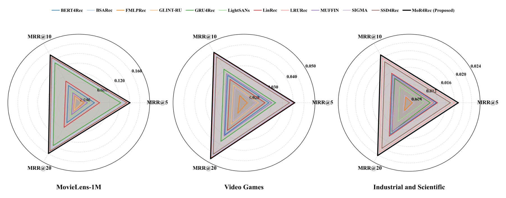
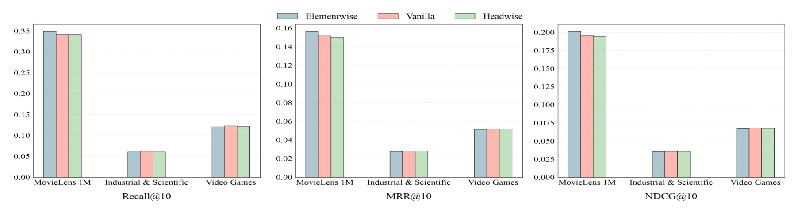
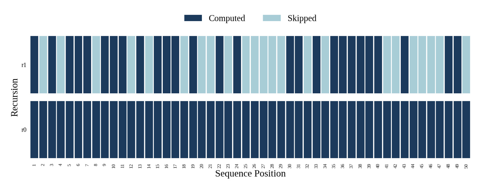
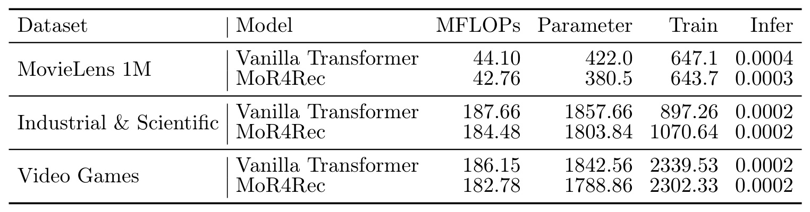
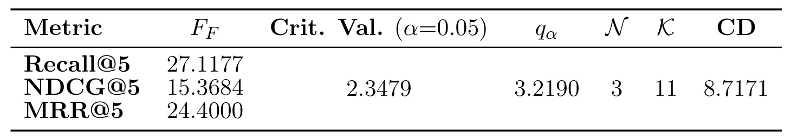
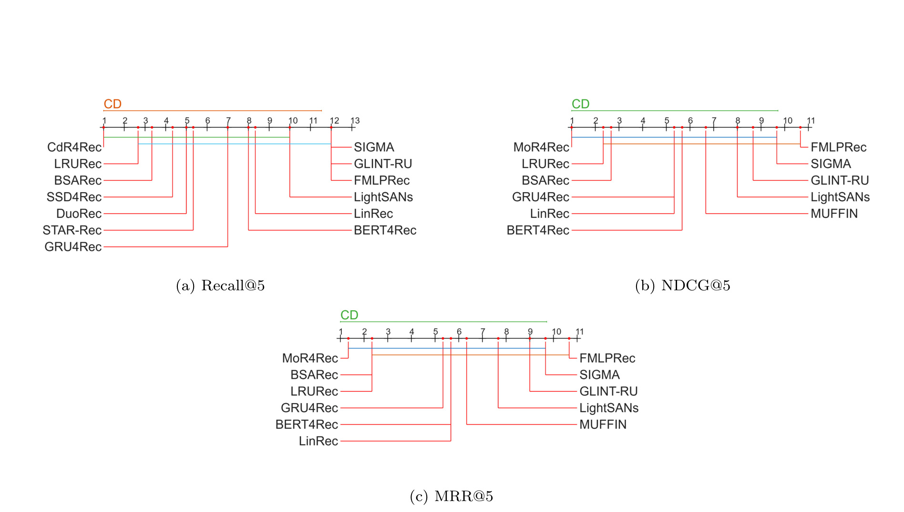

MoR4Rec: Mixture-of-Recursion for Sequential Recommendation / 面向序列推荐的混合递归
Tiwari Ankit Satyaprakash、Adamya Shyam、Vikas Kumar、Bharti Rana 和 Venkateswara Rao Kagita 把逐位置的计算深度选择引入序列推荐。第一作者来自德里大学，合作机构包括 K.R. Mangalam University 和 NIT Warangal。arXiv 初版在北京时间 2026 年 11 月 22 日提交，列于 11 月 24 日公告。本轮未核验到独立源码。arXiv:2611.29462
基于 Transformer 的序列推荐通常让每次交互通过相同深度的计算层。重复性的习惯行为可能只需较浅的处理，反映偏好变化的行为则可能依赖更复杂的历史关系，同一套深度会让这些异质交互使用相同的计算预算。
1. 背景和问题
序列推荐把过去一串带顺序的点击、观看或评分变成对下一物品的判断。一个行为的含义要结合它发生的位置和前文来理解。例如用户一直购买同品牌耗材，最近一次补货可能主要重申已存在的需求。如果最后几次浏览依次跨过相机、镜头和转接配件，某一动作的含义需要从较远的历史和相邻行为联合推断。前一例的重复关系有机会经过少量表示变换后稳定，后一例的有用关系可能需要多次结合上下文。两个例子是理解引言中习惯行为和偏好变化的方式。本文实际输入只有有序的物品交互，并没有向模型提供这些语义标签或对单个行为标注所需的推理深度。
在因果 Transformer 中，每个位置都可以从历史位置读取，后层也可在前层聚合结果的基础上重新组织信息。让所有位置做固定次数的投影、注意力和前馈变换，对硬件十分友好，因为每层都有相同的稠密形状，与批处理和张量内核匹配。它的局限出现在预算均摊的地方。序列长时，很多行为在高层更新了向量，但高层更新对下一物品的增量收益可能不均。希望减少这个增量计算，需要回答两个问题。首先要有一种依赖上下文的选择机制来控制哪个位置继续更新，其次需要让已停止更新的位置仍能被后续活动位置查询。否则浅层退出相当于删掉历史，速度上的收益会同时改变模型所能利用的证据。
把所有中间层权重绑在一起可以缩小物理参数，但只要前向仍然执行同样多的逻辑层，乘加、激活和显存流量就不会随独立权重数量等比例下降。反过来，为每个深度保留不同的层并给容易的样本做早退也能节省一部分计算，但减少参数不再是结构自动保证的结果。MoR4Rec 结合这两个出发点，在首层得到初始上下文，用同一套中间参数多次修正状态，并允许位置在不同轮退出。权重共享决定需要保存和更新几套参数，路由则决定这次前向把哪几个位置交给这些参数继续加工。两个轴分别影响模型体积、优化过程和服务开销。用单一总体参数量描述它们，会遗漏实际执行的递归深度和动态算子成本。
现有序列推荐的几条路线在别处节省工作量。低秩自注意力压缩注意力结构，频域滤波用另一种跨位置作用代替点积注意力，线性注意力通过重新安排矩阵乘法改变复杂度，状态空间和线性递归把历史聚合到可递推状态。密集注意力的自由度、顺序模型的计算规律性以及频域方法对周期模式的归纳偏好各有用处。MoR4Rec 保留了注意力查询历史的形式，主要减少被更新的查询行。如果第二轮有一半的有效位置继续，单看第二轮中间块，注意力计算由方阵变成活动行对原历史列的矩形乘积，前馈和投影也可以只在活动位置执行。真实收益还要减去分桶、掩码、散写和读取浅层缓存值的成本。即便跳过了一半的第二轮位置，首尾都保留的模型也不会节省整个编码的一半。
这项选择比按用户档位或序列长度配预算更细。同一用户可能在序列前半段保留辨识趣味的少数物品，也可能在某个阶段密集地进行同类点击。首层上下文能让同一个物品在不同序列感受到不同前缀，因此有可能发出不同深度决策。这个能力仍受配置控制。固定两轮的路由只能在一次和两次中选择，不能对极少数难例无限加深。本文也没有按请求 SLA 或目标成本动态选择最大轮数。把路由比例定义为可控制的计算预算，需要继续检查训练所得的路由分布怎样随数据、批大小和服务负载变化。
序列中的“有用位置”和“值得更新位置”需要分别观察。只接收一轮状态的点击仍可能在高层被别的位置多次读取。它可能早已携带充分信号，也可能只是路由器暂时无法找到合适的计算路径。即使论文画出一个保留位置与直觉一致的用户序列，也只能说明模型的执行轨迹。证明某个位置的深算构成准确率提升，至少要有预算一致的随机路由、位置启发式路由或推理时重分配的反事实对照。否则当前指标也可能受共享骨架、门控、优化配置或评估集合影响，解释注意力数值本身也无法补齐这个对照。
部署上要区分历史编码器与命中候选。本文交互侧编码完成后，仍通过物品嵌入内积打分。历史动态计算能节省编码工作，不会减少每次打分的候选数量。目录扩大时，物品嵌入表、内积或近邻索引可能主导服务开销。本文只评估三个公开交互数据集，在包含最近验证交互的用户历史上预测一个测试物品。由此可以比较相同评估协议中的整体排名表现，也应该保留几个现实缺口。新物品或新用户能否获益受五核过滤影响，同时推荐系统跨环节运行时的真实请求尾延迟取决于候选规模、有效序列长度和批次中的深路由比例。
另外，序列的时间顺序与整个系统的可用时间并非同一个约束。每个用户各自的最近事件可以提供留一测试目标，但其他用户训练事件可能发生在该目标之后。若想判断在日志时间推进时能否延续收益，需要一个全局训练截止时间，进一步冻结候选集合、物品可用性和统计特征的读取时间。本文公开数据足以看第一步，尚不足以识别多日兴趣漂移、首次曝光或候选刷新所带来的路径偏差。对一个已经部署双塔检索的系统而言，眼下最易嫁接的是用户塔的历史特征编码。先固定物品塔和候选索引，才有机会把动态序列编码的质量代价与打分改动分开。
2. 方法
2.1 输入编码和首中尾骨架
论文 §3.1–3.3 将每个用户的序列按时间排列，先查可训练的全局物品向量，再做 LayerNorm 和 Dropout。首个独立编码层负责让这个局部向量接触历史，形成后续路由的输入。输入阶段不加绝对位置向量。注意力的查询和键使用旋转位置编码，把相对距离放进点积关系，值向量继续携带内容。文中把下一物品搜索写在去掉历史集合的候选域中。遇到允许复购或重复点击的数据，是否对目标和打分分母做例外需要实现澄清，原文没有报告这一敏感性对照。式中 $g$ 是一般性的打分函数，最终部分再给出由模型表示和共享物品向量实现的内积分数。
符号解释：$S_u$ 是用户 $u$ 的交互序列，$l$ 是当前可见历史的长度，$t$ 是其中一个位置，$\mathcal I$ 是物品目录，$\mathbf v^u_t$ 是该位置物品的全局嵌入，$x^u_t$ 是首层所读的正规化输入。等式把预测所用的候选域和前缀表示的来源分开。训练与推理共享物品向量和编码关系，输入随机失活属于训练正则。

Figure 1 从下向上组织数据流。底部的时间序列先查全局物品向量，再经过归一化与随机失活。蓝色第一编码块输出所有有效位置的上下文状态。紧接其上的路由节点接收这些状态，对不同位置分别决定中间编码要执行几遍。虚线框内部竖排的几个编码器代表同一块的组成层，框外重复次数表示再用这些层，内层权重在各轮共享。外框上方的最终编码层是独立的，位于递归空间之外，前面的不同深度结果都会回到这一层的共同输入。预测头读该层输出后给物品打分。这个流程意味着退出只发生在中间递归中，浅路线仍经过首层、至少一遍中间块和末层。相比将序列按最后一步整体判成简单或困难，图中的连续箭头沿着时间位置汇集，明确了资源分配的单位。同一物品如果出现在两个时间位置，两次交互各自决定是否继续。图里没有展开每轮缓存写读的内部明细，因此不能只凭框架箭头判断所有位置每轮都重新生成键值，也不能反推出已退出位置被丢弃。随后公式才说明活动位置的查询如何与全长历史缓存相乘。图里的权重共享和路由同样影响训练，不过一个是多轮梯度流回同一物理块，另一个是最深层的模型调用只覆盖一部分位置。实验配置中总逻辑深度四、中间一个物理层最多跑两轮，所以图中多层中间块是结构的一般形式。工程上记录每个位置的实际执行次数、活动集合和末层进入前的张量形状，才能验证图所表示的稀疏执行是否真正落到内核。这也揭示了为何四个逻辑层的参数和计算结果不能用同样的降幅解释。共享中间层减少了物理权重，完整深路径仍会读取它两次。
每个编码层用预归一化残差，自注意力和 SwiGLU 前馈各有独立残差。下式对应式（3）、（4）、（8）、（10）和（11），标准投影式（5）–（7）以及把位移写成一般函数的式（9）随符号一并解释。唯一首层 $\Phi_0$ 和末层 $\Phi_{L-1}$ 保留独立参数，夹在中间的 $L-2$ 次逻辑层执行由其层号与基础块深度取模实现。式（12）的这种复用要求 $(L-2)$ 可被 $R$ 整除，具体实验 $L=4,R=2,D=1$，中间块一次就是一层。多轮能扩大变换次数，但每次应用的是同一个映射，不能假设与四套独立权重的函数族等价。
符号解释：$H^{(\ell)}$ 是第 $\ell$ 个逻辑编码层的输入，$Z^{(\ell)}$ 是注意力更新后状态，$W_g,W_u,W_d$ 为前馈的门、上投影与下投影，$\odot$ 为逐元素乘。查询、键、值分别由归一化状态经过 $W_Q,W_K,W_V$ 获得。$\tilde q_t$ 和 $\tilde k_j$ 将位置旋转 $R(t)$ 和 $R(j)$ 分别用于查询、键，旋转的合成让内积只依赖相对偏移。$M$ 将未来位置遮蔽，$d_h$ 为每个查询头的维度，$V$ 是被汇聚的值。框架允许查询头数不小于键值头数，实验两种头数同为二。标准 GQA 可以给多个查询头共享一组键值，但这一配置不产生由头数减少带来的节省。
2.2 路由级联和 KV 共享
第一层输出 $h^0_{u,t}$ 后，一个线性路由器为该位置分配各深度概率。它取最大概率的深度作为离散决策，因此给定一次前向，活跃集合呈自然级联。模型依据决策向量 gather 活动位置，做递归块的计算，再按原位置 scatter。使用位置集合表达式（15），避免把同一物品多次出现误写成只有一项。活动位置做完最后一次递归时，其状态按被选深度的概率加权，再加回首层状态。首层到末层之间的残差让浅位置也有直接信息通道。这里按论文 §3.5 的深度编号 $1$ 到 $R$ 写。实际观察图从 $r0$ 标第一轮，编号偏移不改变每个有效位置先执行一次的规则。
符号解释：$W_r$ 是从隐藏维度映射到 $R$ 个深度的路由矩阵，$p_{u,t,j}$ 是第 $j$ 个候选深度的软概率，$z_{u,t}$ 是硬深度，$\mathcal A_{u,r}$ 是第 $r$ 轮仍需更新的位置，$h^r_{u,t}$ 是该轮中间块输出，$h^{\mathrm{fuse}}$ 是进入最终层前的融合表示。固定硬决策时，选中概率仍参与乘法，预测损失可沿概率向量影响路由器。对于两条深度分数接近的位置，越过边界会更改执行图，而概率加权只给出当前路径的局部梯度。论文没有声明对离散切换做无偏估计，也没有在验证阶段穷举每个交互的反事实最佳深度。
级联缩短的是深轮的查询行，因果历史列通过保留最近一次有效的键值继续可见。 首轮所有非填充位置都写入键值，缓存键已经按原位置旋转。后轮把活动条目按该轮隐藏状态重投影，浅退出条目保留之前的值。当前活动位置继续和历史中所有合法位置的键相乘，得到矩形因果注意力。物理实现必须保存 gather 前的位置索引，后轮若按压紧后的连续序号另行旋转，缓存键和查询的相对位置会与原始交互顺序失配。下式是（17）–（20）的合并表达，$b^r_{u,t}$ 表示该轮内对应投影使用的输入隐藏状态，以免把投影前状态与该轮输出混用。原文没有给逐逻辑层、跨请求的具体缓存布局，能够断言的是本次序列编码内部的递归状态复用。
符号解释：$\tilde K^r_t,V^r_t$ 为第 $r$ 轮在原始位置 $t$ 保留的键和值，$\tilde Q^{u,r}$ 只包含活跃位置，$M^{u,r}$ 是由这些原位置信息构造的矩形掩码。对任何有效位置，深轮可读取它最后一次写入的表示，训练和推理都按因果条件只读取该查询位置及以前项。全深运行会得到每轮都更新的键值，因而混合深度中的缓存是模型设计所允许的跨深度表示，不能当作固定深度网络的精确缓存替换。若批内多数位置都是深分支，压紧节省很小，动态准备的固定开销就可能回收不足。
2.3 注意力门控和训练目标
G1 门放在注意力输出之后、最终输出投影 $W_O$ 之前。按头版本在每个查询头的投影里多产生一个标量，对该头的所有维度乘同一个 sigmoid 系数。逐元素版本为每个维度产生一个系数，把查询投影的输出宽度由 $d$ 增至 $2d$。两种门都来自当前活动位置的表示，训练和推理都会计算。它们可以对部分上下文信息降权，但门控系数为零附近仍需要先得到 attention 的和值。因此门控主要改变表示与参数量，节省深轮行计算的是路由。式（21）（22）可合并表示如下。作者实验将这些门控策略同无门控对照，门控型号通过验证指标挑选。
符号解释：$g^{u,r}_{t,h}$ 是第 $t$ 位第 $h$ 头的标量门，$G^{u,r}$ 是按特征展开的门张量，$\sigma$ 为 sigmoid，$A$ 是未门控的注意力输出，$\hat A$ 是传给输出投影的结果。原文第二式把拆出的查询简写为旋转后的查询，实际旋转应针对查询部分，门用概率式缩放。门控数值受隐藏状态影响，通过预测损失和骨架共同学习。逐元素调节有更细的表达能力，也增加了学习参数与运算，同一验证协议下可检验这些成本能否换来排序增益。
独立末层精炼各深度融合的结果，对有效训练位置预测其下一交互。论文 §3.8 将最终表示与候选物品嵌入作内积，再在其定义的合法候选中做交叉熵。下式把式（23）–（25）组织为一个预测组，$\mathcal C_u$ 记原文的合法候选域。相同权重中间块的训练信号来自各轮参与的位置，路由的软概率既影响末层所看到的残差比例，也进入负载损失。将 G1 的学习目标和路由目标分开，有助于解释为什么门控消融无法单独回答动态深度带来的收益。
符号解释：$h^{\mathrm{out}}_{u,t}$ 指预测头使用的最终状态，$\mathbf v$ 是候选物品嵌入，$\mathcal T$ 为有非填充下一目标的训练位置，$\mathcal C_u$ 是分母候选域。$\mathcal L_{\mathrm{rec}}$ 使真值相对候选获得更高分数。硬路由若总选某一深度，另一路就难以收到预测梯度，性能和资源都将趋向单路径。为此作者跟踪每个深度的软概率均值及硬分配频率，在式（26）–（28）将它们和原交叉熵合并。
符号解释：$B$ 是训练批中的序列数，$l$ 是公式采用的序列长度，$f_r$ 由硬决策统计，梯度经 $P_r$ 回到路由器，系数 $R$ 按深度数缩放。热门分支的软概率在相乘项中权重较大，模型受到抑制塌缩的训练信号。代码层面对填充位置应检查参与哪些平均，原式以 $Bl$ 表示批槽位而 §3.6 明确说缓存的首轮覆盖非填充项，未提供路由均衡掩码的实现。训练均衡项鼓励分散到几个“最终深度”桶，不能把这一约束当作生产时的实时预算。若两个桶各半，一半有效位置仍要经过第二轮，所有有效位置还都经过第一轮。
3. 实验结果
3.1 数据集、切分与基线
作者使用 MovieLens 1M 与 Amazon Reviews 2023 的 Video Games、Industrial & Scientific 两个域。三个集合的事件类型、物品目录和用户总数不同。训练规则以用户为单位取最后一个交互为测试、倒数第二个为验证，测试时把训练和验证交互放进上下文。采用五核约束和 50 的最大长度，论文描述超长序列切成子序列，短序列在左侧补齐。复现时需要明确切段和留一的先后与段窗口的重叠，否则一个用户能产生多少训练位置，以及路由器看到多少填充或截断位置，都可能不同。

Table 1 把用户、物品、交互次数和稀疏度放在同一行。MovieLens 1M 的 6040 用户和 3416 物品对应 999611 次交互，表中稀疏度为 95.16%。Video Games 有 94762 用户、25612 物品和 814586 次交互，Industrial & Scientific 有 50985 用户、25848 物品和 412947 次交互，两个 Amazon 域都报告为 99.96%。稀疏度的分母是用户物品组合，而序列算力受每个用户有效历史长度影响，可以用列内除法感受两种口径的区别。三个行的事件数除以用户数约为 165.5、8.6 和 8.1，MovieLens 的均值超过长度配置，Amazon 均值则显著低于它。这个均值无法还原长度分位或确切留一后的截断比例，但足以说明同样的 50 槽位会面对不同实长分布。门控若在较密的集合有效，稀疏度与有效历史都可能相关，二者仍与域分布、物品频率和事件语义共同变化。若按单个用户留一做评估，规模更大的用户集合也没有自然放大它在三数据集平均改进中的权重。样本数与均值的并列读取能避免把这样的均值解释成三域拼起来的流量加权值。 相同活跃频次的人在三个目录中遇到的目标排序难度也可能不同，最好按域单独解读。
正文 §4.3 列出的十个对照覆盖 GRU4Rec、BERT4Rec、LightSANs、FMLPRec、LinRec、BSARec、LRURec、GLINT-RU、MUFFIN 和 SIGMA。没有在主表看到 SASRec 列，尽管相关工作借它说明因果自注意力。各模型统一嵌入维度 64，dropout 和 attention dropout 在 0.1 至 0.5 之间搜索。MoR4Rec 的训练使用 AdamW、学习率 0.001、权重衰减 0.01、批大小 256，最多两百轮，按验证 Recall@10 设十轮耐心的早停，超参按验证 Recall@10 与 MRR@10 的平均选择。主表没有展示各超参搜索预算、重复种子以及采样候选的逐实验细节，故更适合作为作者协议下的模型对照。复现还应把是否过滤历史物品、负例采样和候选物品截止时间写成稳定配置。
3.2 主结果和三种排序指标
Recall 衡量目标进入前 $k$ 的机会，NDCG 对较早的位置赋更大权重，MRR 取首个命中位置排名的倒数并做平均。当前协议给每个用户留一个测试目标，Recall 在这一前提下可按命中率理解。如果模型将已命中的物品从第十名移到第二名，Recall@10 可保持不变，NDCG 和 MRR 会升。三个截断点与三种指标联合观察，比单读一个相对改进更能判断变化位于候选覆盖还是前部重排。

Table 2 对每个域分六行，依次是三个 Recall 截断与三个 NDCG 截断。每个模型栏里先列分数，再用相邻数标出该行名次，最佳基线有下划线，末列以最佳基线分数作分母。十八行之中 MoR4Rec 均排第一。MovieLens 的 Recall@5 从 LRURec 的 0.2268 到 0.2377，增加 0.0109，即 1.09 个百分点，末列相对约 4.806%。该域的 NDCG@5 从 0.1581 到 0.1658，相对约 4.870%。Industrial 对应 BSARec 作为最强基线时，Recall@5 从 0.0320 到 0.0321，绝对只增 0.01 个百分点，NDCG@5 从 0.0221 到 0.0223。Video Games 的最强基线回到 LRURec，Recall@5 是 0.0700 到 0.0712，NDCG@5 是 0.0474 到 0.0482。同一方法在三种交互密度和评分基线下呈现不同收益幅度，不能把 MovieLens 的百分比覆盖到两个 Amazon 域。把三行 Recall@5 相对百分比简单平均约为 2.28%，NDCG@5 约为 2.49%，与摘要所述约 2.50% 同量级。平均给了三个域相同权重。若要翻译成每万用户多命中的人数，应以各域绝对差单独估算，并保留原表四位小数所带来的舍入。Table 2 的最高分来自整套 MoR4Rec 配置，与最好分数相减不能单独定位到级联缓存、共享层或门控的贡献。 从基线列还可读到同一架构族的相对名次会调换。BSARec 在 Industrial 各截断充当最强基线，却在另两个域居于 LRURec 之后。MoR4Rec 在 Industrial 的 NDCG@10 只比最强基线高约零点零零零一，这种小差可能低于一次随机初始化或候选重采样的变化量，论文没有给出这两项波动。反过来看 MovieLens 的 NDCG@10，零点一八六到零点一九二九，绝对差可在四位小数报告中清楚看到。对照同一域的 Recall@10 从零点三一三四到零点三二一九，可以分别确认命中与位置折扣均改善，无法从两个聚合量判断有多少用户两项同时改善。若下一步希望知道新增候选是否由二次递归带来，可把模型输出和深轮路由按用户匹配，检查旧榜未命中转为命中以及旧榜命中反而丢失的两组用户。表格的单向差只给出两组抵消后的结果。
同一表的深截断同样体现域差异。MovieLens 的 Recall@20 从 0.4129 到 0.4239，绝对多 1.10 个百分点，相对约 2.66%。Video Games 的 Recall@20 从 0.1474 到 0.1492，相对约 1.22%。Industrial 的 Recall@20 从 0.0663 到 0.0669，相对约 0.90%。三个集合在扩大候选截断后仍可见正向差值，且总体度量处于较小的绝对范围。离线下一项预测不能告诉我们真实推荐位的展示偏差和用户回访变化，也没有直接提供召回索引中的新增有效候选版本。

Figure 2 在每个数据集画一张雷达图，三根径向坐标各自对应 MRR@5、MRR@10、MRR@20，图例给模型颜色，黑线是 MoR4Rec。读图时应在单个面板内看同一径向的相对位置。MovieLens 的坐标刻度和 Amazon 两域不同，即使某两个外形面积相近，也不能用面积对比两个域的 MRR 大小。MoR4Rec 的轮廓较外侧，几条相邻学习器的距离相对小。摘要给出对最强基线平均 MRR@5 改进约 2.0%，表二却没有 MRR 的逐格数字供独立配对复算。雷达图的图例还包含 SSD4Rec，它不在主表列名中。因而图能补充排序前部的方向性信息，但不能把主表的基线范围和雷达图区的基线范围默认拼成同一统计矩阵，再对每行做显著性或精确相对量的计算。对于选型，最好要求与排行榜同一候选和种子输出每用户排名差，随后比较相同的前部命中概率与已命中物品的提前量。原图的尺度有限，最接近曲线之间的距离不宜从像素反推成精确数值。 此外，雷达连线用来引导阅读三个离散截断，无需把截断之间的连线看作连续响应。
3.3 门控消融和递归路由轨迹
实证部分先在同一 MoR4Rec 骨架内换无门控、逐头门控和逐元素门控，随后记录一个随机用户的路由轨迹。前一项可以讨论门控方案是否在各数据集有相同排序，后一项验证动态路径实际会产生分叉。两项证据的统计单位分别是全数据集汇总和单个样本，二者的解释边界不同。

Figure 3 横向的三个面板分别是 Recall@10、MRR@10 和 NDCG@10，三个颜色在每个数据集内代表逐元素、无门控、逐头。MovieLens 的蓝柱总体稍高，表示对输出元素分开缩放在该实验内有一定收益。Industrial 和 Video Games 的三柱更接近，去掉门控后并未出现可视的大幅退化，Video Games 的 Recall 面板中无门控甚至略靠前。逐头方式增加较少投影输出，折中策略应结合这种有限质量差和实际算子耗时一起看。Figure 3 的 MovieLens Recall 数值落在约 0.34 到 0.35，主表对应行的分数为 0.3219。两处差异无法从原文明确对齐到种子、评估样本或另一分支设定，因此解读保留各自口径。在消融图内部比较颜色具有明确对照含义，但把柱高当作主表最终模型分数，再计算逐元素门控贡献会引入不兼容的分母。作者把密集数据适合较细调节解释为丰富上下文的作用，这可视为一个合理假设，图中没有跨域控制实验把它从物品语义和监督规模里剥离。 还可以用输出投影的位置解释消融。按头门给同一个头的值向量共同缩放，逐元素门允许同一头的维度在被合并到输出空间前各自变化，因此两种策略在上游读的是同一历史，差别出现在合成信息的权重。如果目标在早期训练可用的交互很少，增加参数可能让模型更容易记住偶然共现。该假设要通过增加或删减同域历史事件检验，跨域柱高不足以从结构和样本共变中识别这一点。若更重视移植，先在验证集合同时固定路由和打分头，再以多次运行报告门控所提高的分数和推理花费。特别是在同行的蓝粉柱几乎相同的地方，微小平均收益不足以判断其稳健性，也不保证适用于更长历史。

Figure 4 横轴标位置一至五十，纵轴只有两轮。底行 $r0$ 的五十个格都是深色，意味着所有显示位置完成第一轮。上行 $r1$ 深浅交错，深色继续计算，浅色退出当前轮，在缓存侧留下上次状态。表上的位置一、三和五等早期位置也出现深色，末端既有继续也有退出，因此最可靠的读法是活动集合真实按位置有变化，且变为首轮活动集合的子集。该热图没有给位置上的深路由概率及置信范围，也没有比较固定的“末端优先”启发式。作者提到近期位置可能更常继续，图的一段内确能找到连续保留，但单个随机轨迹无法建立全数据集的单调近因规律。更直接的验证可在每个长度桶统计第二轮存活率和相对位置，再将路由换成同预算的随机或位置基线，量化预测差值。高层读出某个浅缓存仍有作用，格子浅色只代表没有重算，不能等同于历史被屏蔽。仅凭这种颜色也无法区分重复物品由上下文语义触发还是位置线索代理了相对重要度。
3.4 计算代价的不同分母
§5.4 的计时对手是一套同为四个逻辑层的普通 Transformer，使用相同候选打分项，从而比较骨架。Table 3 没把共享、动态路由、KV 复用和不同 G1 结构拆成四组同预算实验。所报告的效率整体配方能回答配置级代价，无法分拆各组件的边际贡献。尤其训练可能由不规则的反向传播和动态批同步主导，MFLOPs 减少并不保证同等墙钟变化。

Table 3 每个数据集用上下两行列出 Vanilla Transformer 与 MoR4Rec，MFLOPs 是按表注所述单用户前向，参数、训练和推理也列在相邻的不同口径栏。MovieLens 的计算量为 44.10 到 42.76 MFLOPs，约降 3.04%，参数由作者明确解释的 422.0K 到 380.5K，约降 9.83%。Industrial 计算量为 187.66 到 184.48，约降 1.69%，Video Games 为 186.15 到 182.78，约降 1.81%。固定首尾层和候选打分仍在，几个百分点的整体下降比只从第二轮活动行率推算更可信。训练列显示 MovieLens 647.1 到 643.7、Video Games 2339.53 到 2302.33，Industrial 却由 897.26 升至 1070.64，按刊载数字约增 19.3%。因此三个数据集的训练时间没有一致向好。推理列只在 MovieLens 显示 0.0004 到 0.0003，两个 Amazon 域两行都按当前精度显示为 0.0002。论文表注写每用户前向，没有把计时单位、硬件、统计分位、预热、同步或批尺寸说清到可用于复现实测的程度。差一个显示精度单位也不足以估算显著性。部署判断需要拆分用户编码、物品内积、批处理形状和缓存 scatter/gather，在相同服务负载中重新测尾延迟，并报告有效历史长度和深轮活动比例。这些成本表提供了第一步模型预算刻度。 表列还表现出不同目录的计算量与参数基线本身差距四倍左右。物品嵌入查表的参数量会随目录扩大，物品打分的开销也与候选数量相连。本文没有给出只统计编码器与完整预测的并排 MFLOPs，因此即便知道两个模型用同一打分项，也无法从总量倒推出两块各占多少。若部署时使用近邻检索而非每次对固定全集内积，分母会变化，文章的百分比未必可以直接套用。整理线上结果时还应沿两条轴记录情况，一条按每用户实际深轮位置数拆分平均运算，一条按批中最长历史和最深分支判断内核利用率。否则可能出现每用户运算节省而批内长尾拖慢并发吞吐的组合。
3.5 排名统计与两两显著性
作者报告先按数据集汇总方法平均排名做 Friedman 总体检验，再用 Nemenyi 检查两两差异。若用于选模型，最有用的是理解两类结论各自需要什么。总体拒绝说明比较集合中存在方法差异，两两检查才讨论 MoR4Rec 与某一个基线之间的差距是否超过校正阈值。

Table 4 的三行依次给 Recall@5、NDCG@5、MRR@5 的统计量 27.1177、15.3684 和 24.4，共用临界值 2.3479。作者由这些数报告总体同等假设在 0.05 水平被拒绝。右半部给 Nemenyi 所用 $q_\alpha=3.2190$、三个数据集、十一个方法与临界平均排名差 8.7171。排名汇总的基本块是数据集，故不能把测试用户数直接用作这里的 $N$。仅三个领域时，临界差在一到十一名的平均名次范围里很大。前两名的平均名次如果只差约一，已经远低于 8.7171。Table 2 中的 Recall 和 NDCG 逐行第一是精确可检验的描述事实，但与最强基线两两显著需要更强证据。作者未提供重建 MRR 逐集排名及所有统计矩阵的数值附件，本轮保留表列和作者总体判断，并核对足以避免过度归纳的限制。即便某些末位模型达到临界差，也只能支持特定成对比较，最高排名跨域一致不自动给出所有成对比较的统计结论。 需要同时核对每种指标进入检验的模型列表和缺失项处理，否则总体检验统计量也无法独立复算。平均名次还丢弃绝对差尺度，千分之一与较大的分数差只要名次一致，在这套检验中影响相同。
符号解释：$K$ 指同一统计比较里的模型数，$N$ 是作为阻断条件的数据集数，$q_\alpha$ 是给定显著性水平下的 Nemenyi 临界系数。代入表列数值可得约 8.717。用它检查一对方法时，比的是数据集平均名次之差。若候选方法集合改变，名次和阈值都应同步重算。

Figure 5 的横轴是平均排名，越靠左名次越好，图上 CD 标尺对应需要跨过的距离。右上 NDCG@5 和下方 MRR@5 面板可读到 MoR4Rec 位于左侧，紧随其后的 LRURec 或 BSARec 与之相距很小，同表中超过八个排名的临界差无法对应。更值得留意的是左上 Recall@5 面板的轴从一延伸到十三，左侧标为 CdR4Rec，并出现 SSD4Rec、DuoRec 和 STAR-Rec 等与 Table 2 不同的比较对象。右上和下方两面板的轴止于十一，所示名单也不同。§5.5 末尾把三张图概括为 MoR4Rec 对所有对手两两显著领先，当前图文和表列无法支持这个强结论。若要复核各对比，应从同一模型名单、相同评估协议和每个域的精确得分重新构造排名矩阵，分别报告整体统计、校正后的成对判断和原始分差。当前更稳妥的读法是主表给出作者协议下的一致正方向，误差范围、跨域稳健性和相邻模型的显著差异仍须独立核实。 图中的彩线连到排名轴，它们表达放置每个模型标签的名次数值，不表示原始指标置信区间。对轴上邻近标签应直接读取排名差，不能按折线视觉高度判显著。
4. 总结
4.1 结构价值和可迁移位置
MoR4Rec 把动态执行的粒度从用户序列细化到交互位置，保留密集首尾并用一套递归权重完成中间的不同深度。核心价值在于允许低成本表示保留在历史缓存里，深层查询可继续用它解释新行为。对多级召回链路，可先把这种机制放在编码用户历史的分支，同一候选池和物品塔下检查用户向量是否改善召回和前部排序。若用于大模型的长期记忆检索，也有相近的建模问题。一些重复事件只需要轻量编码，一些事件需要多轮聚合其他历史。先检查同一历史在后续查询中究竟保持可读多久，再决定浅状态是否足够。MoR4Rec 的缓存是单条序列内部的递归轮间复用，运行时长、跨会话有效性和缓存版本切换都未在本文测量。
4.2 证据边界与后续核验
第一，数据只覆盖两类 Amazon 评论和电影评分，五核筛选、有序留一和长度五十决定了测试的样本分布。对低活用户、冷启动目录、超长历史和全局时间漂移的效果仍待测。第二，动态路由实际只比较两轮容量，运行时变长的张量准备和不同批中的活动深度会影响延迟。Industrial 训练时长走反方向，不能承诺节省训练墙钟，两个稀疏域也没有显示更低的推理时间。第三，门控比较支持域内排序方向，摘要的主表提升属于完整配方，预算匹配的固定递归、随机路由、无缓存及共享层消融组合不够齐全。第四，单条路由图没有支持“复杂交互被识别”的分组标签或干预证据，正表里的排名提升不足以说明路由深度具备语义解释。第五，统计图和表的模型清单存在冲突，且临界差过大，准确率的强显著性结论需要原始矩阵，不能借数据量填补数据集数不足的限制。主表没有展示逐用户差异的置信区间，数据集层面的统计判断不应替代同一用户对偶结果的方差估计。
复验时优先固定 MovieLens 及两个 Amazon 域的切段顺序、候选过滤、负例策略、随机种子和权重尺寸，并记下逐用户的 Recall 与 MRR 差值。随后在相同深轮活动比例下，配对比较学习路由、按相对位置保留路线和随机保留路线，额外统计真实预测位置处于哪个深度。这些试验能区分知道在哪里花预算与仅调整平均层数两件事。缓存层面可对同一原始位置记录它在哪一轮写入 K/V、有哪些因果查询读取，并在有重复物品、稀疏有效位置和填充的序列上做小规模逐元素比对。最后保持候选内积计算不动，按有效历史长度分桶记录推理批大小与第二轮占比，分别计入路由、预取、索引搬运、注意力和输出头耗时。整体 FLOPs 的论文观测约下降百分之一点七至三点零，只有确认新路径给线上尾延迟留下余量，才能判断当前系统是否值得承担条件执行的实现复杂度。
对于跨日期部署，进一步可以构造一个全局日志训练截止点，固定物品入库和可用版本，给近期新活用户和头尾物品分别保留可审计的评估分层。这样可以观察可重复的离线配方，进入真实时间演进后会不会把增益集中在高频存量用户。若兼有同预算路由对照和服务代价测量，后续才有足够信息解释效果由哪类输入和哪种算子共同产生。